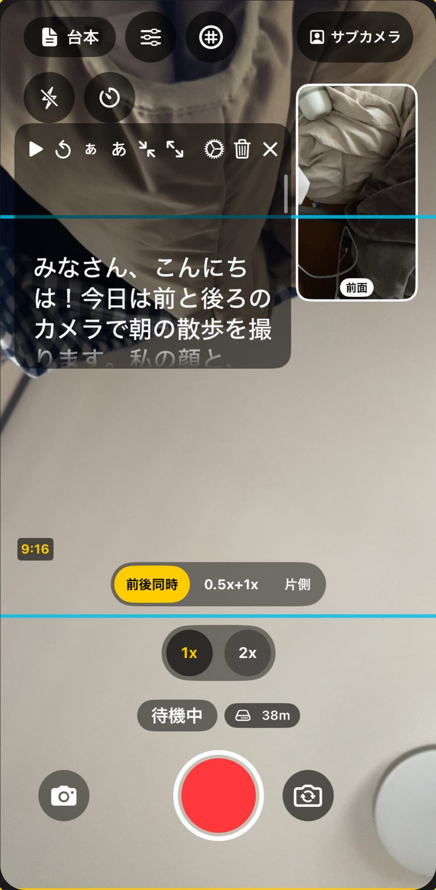
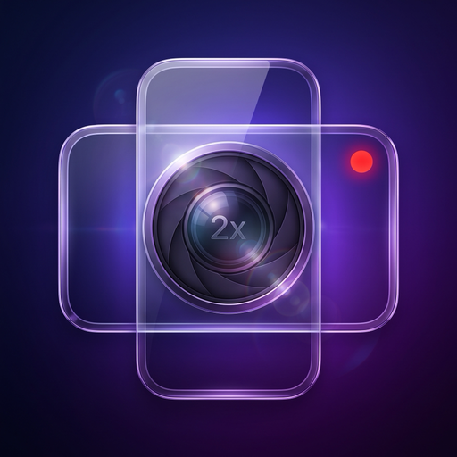
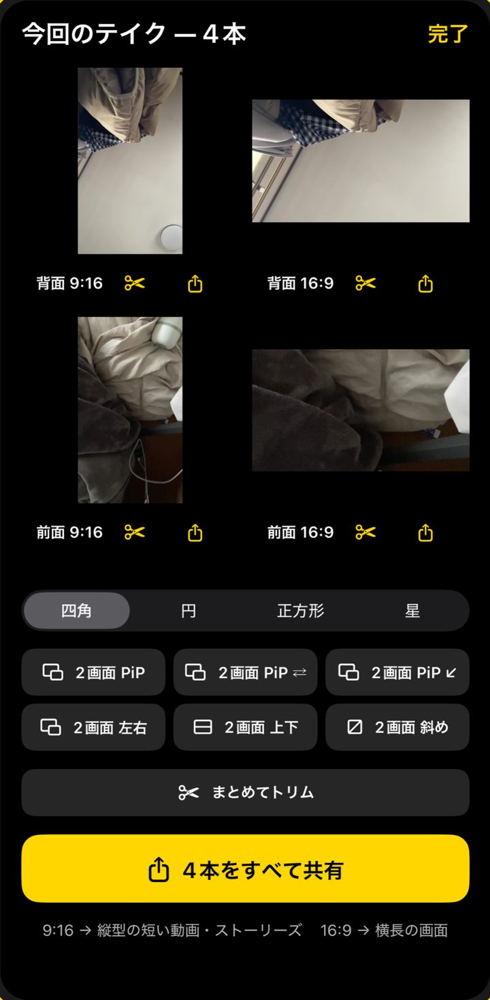
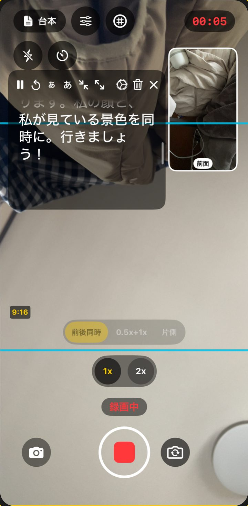
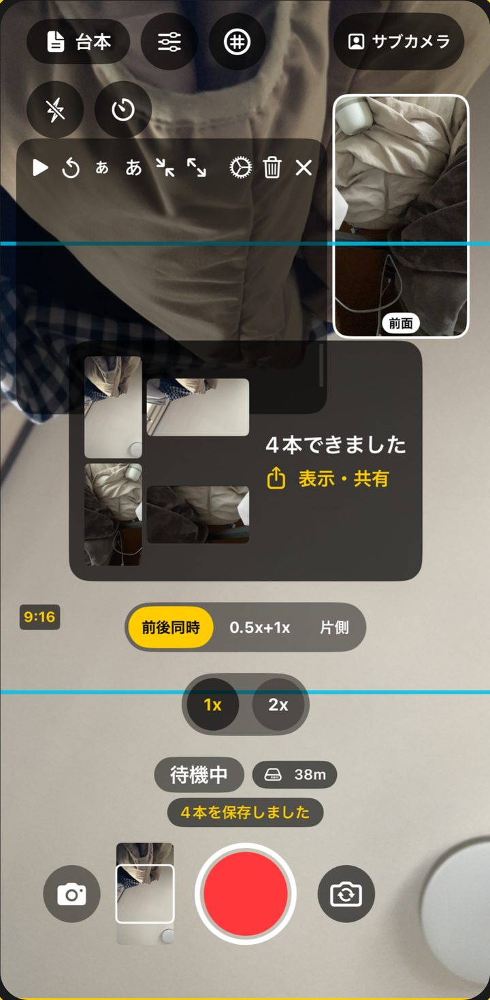
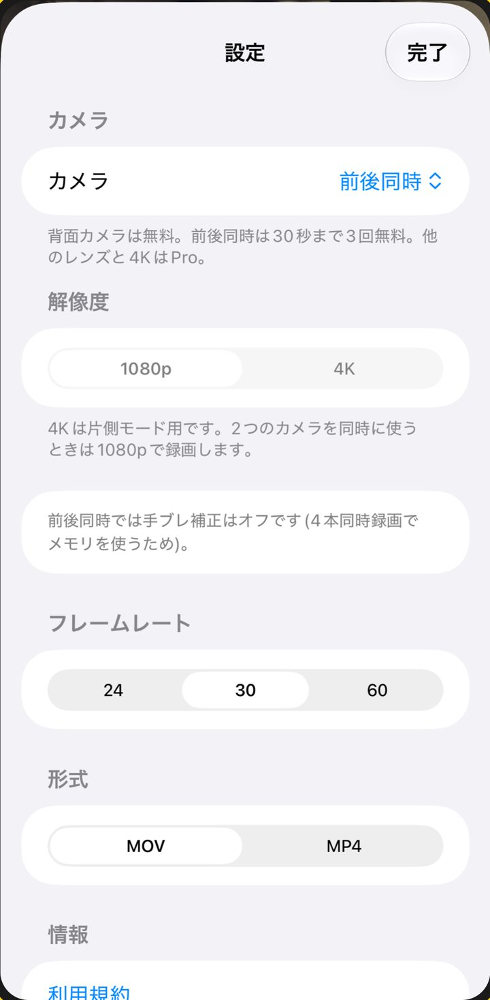

前後同時
2つのカメラを、ワンタップで。
前と後ろのカメラが同時に録画します。それぞれ縦と横の1080p動画になります。
- 9:16と16:9の枠、グリッド、0.5x／1x／2xのボタン、録画中のピンチズーム。
- 0.5x＋1x：縦は1xレンズ、横は超広角で、同じ撮影から。

1回の撮影で、4本の動画。
TakeBoth は、前と後ろのカメラを同時に使い、それぞれの縦（9:16）と横（16:9）を、別々の4本の動画として写真アプリに保存します。あとから切り抜く必要はありません。4本はワンタップでまとめて共有できます。


前後同時
前と後ろのカメラが同時に録画します。それぞれ縦と横の1080p動画になります。

プロンプター
台本がカメラの上を流れます。タップで一時停止。文字の大きさと速さを変えられます。

写真アプリへ保存
止めるとすぐ写真アプリに保存されます。4本を同時に再生して確認し、1本ずつトリム、1本でもまとめてでも共有できます。

設定
4K（1台モード。前後同時は1080p）、24／30／60fps、MOV／MP4、1:1・4:3の追加ファイル。
開いて録画するだけ。アカウントの作成はありません。
動画は、あなたが共有しない限り iPhone の外に出ません。
写真アプリへの保存だけで、ライブラリを読み取ることはできません。
基本の機能は、期限なしで。
1回払いの買い切り。サブスクリプションではありません。
価格は購入前にアプリ内で表示します。購入確定時に Apple アカウントに請求されます。同じ Apple アカウントなら、アプリ内でいつでも復元できます。
1回の撮影で、前後それぞれの縦（9:16）と横（16:9）の4本です。写真アプリには別々の動画として入り、1本のピクチャ・イン・ピクチャにはなりません。
1台モードになります。1台のカメラで、縦と横を別々のファイルで保存します。
止めて、そこまでを保存します。アプリが途中で閉じても、次に開いた時に動画を取り戻します。
いいえ。許可しなくても、音なしで録画できます。
いいえ。TakeBoth Pro は1回払いの買い切りです。